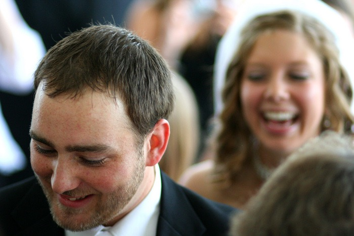
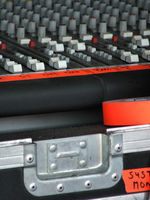
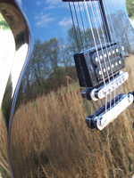
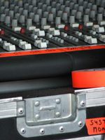
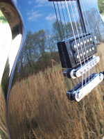

Next Photo
-
Vote
A Joy
One of my amazing friends and his bride on their wedding day. This was my first day of shooting with my new camera, a Digital Rebel XT and I loved every second of it. The camera preserved so much detail in the photos. You can see the groom here, leading the bride back into the church. The main light was behind them, but mostly blocked by the people around, and the light bouncing off the wall was enough to grab this shot. The small aperture isolated the two, in their blissful moment. All I can say is congratulations.
More...
ID: 58
Title: A Joy
Description: One of my amazing friends and his bride on their wedding day. This was my first day of shooting with my new camera, a Digital Rebel XT and I loved every second of it. The camera preserved so much detail in the photos. You can see the groom here, leading the bride back into the church. The main light was behind them, but mostly blocked by the people around, and the light bouncing off the wall was enough to grab this shot. The small aperture isolated the two, in their blissful moment. All I can say is congratulations.
Keywords: wedding marriage lead through bride happy joy
Hidden: n
Date added: Sun May 27 17:23:16 CDT 2007
Date taken: Sun May 27 05:05:12 CDT 2007
Camera: Canon EOS DIGITAL REBEL XT.
Resolution: 3456x2304
Mode: 0
Shutter speed: 674216/65536
Flash: 16
Exposure time: 1/1250
Iso: 800
Metering: 5
Aperture: 111149/65536
Focal length: 85/1
Artist: NathanielGuy Mahieu
Copyright: 2007 NathanielGuy Mahieu
Views: 1056
 


